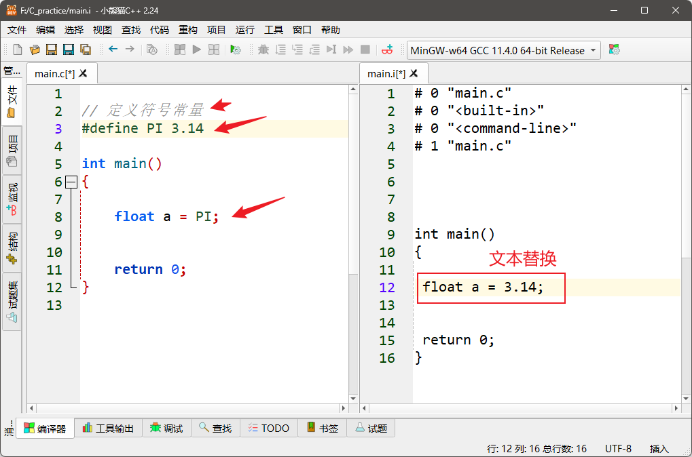
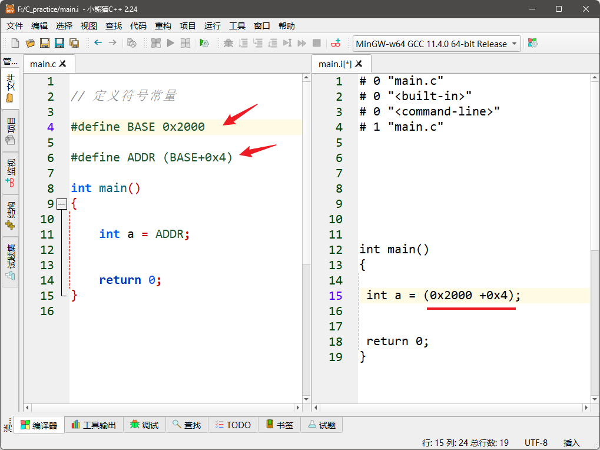
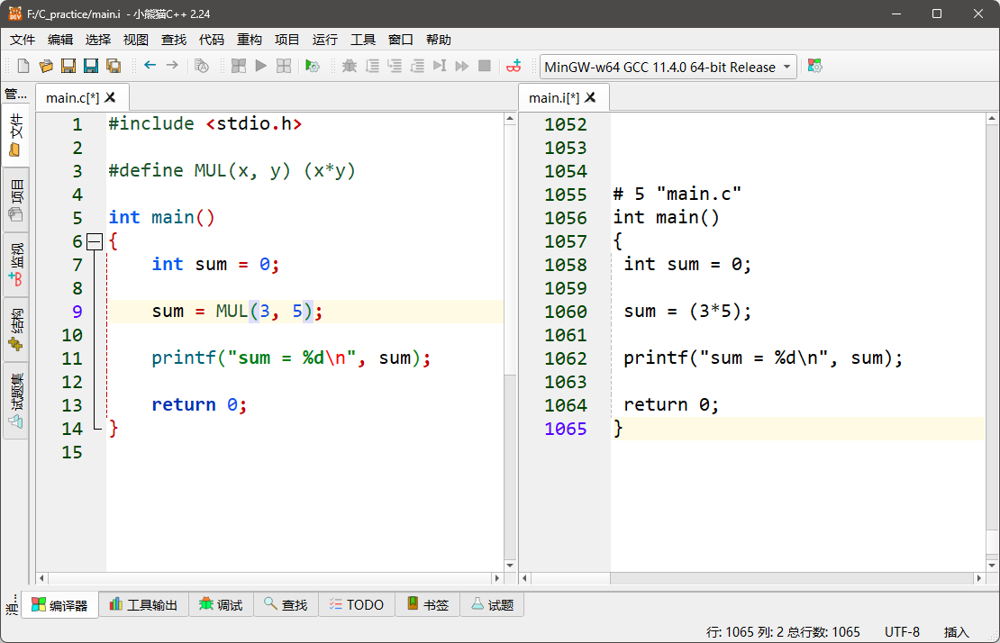
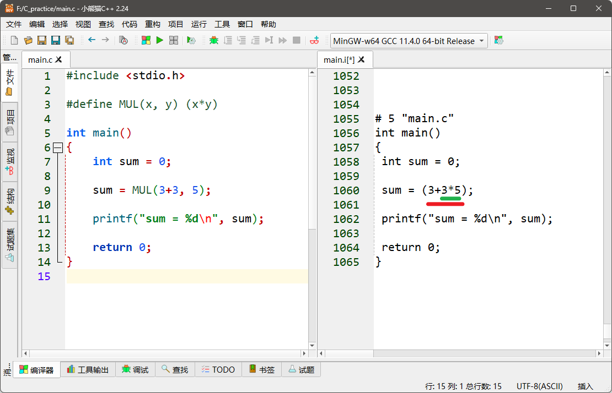
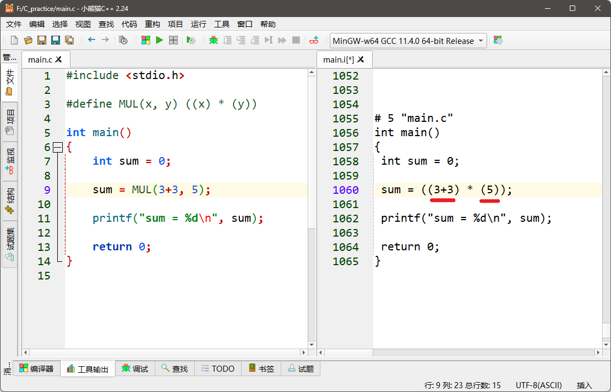
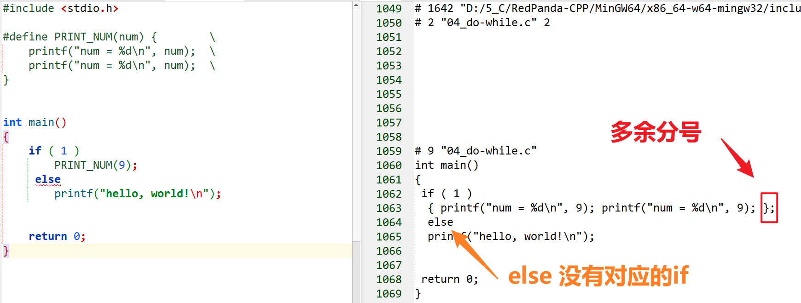

<!DOCTYPE lake>
<p data-lake-id="ubabeb2fe" id="ubabeb2fe"><span data-lake-id="uc4172a82" id="uc4172a82">宏定义是一种预处理指令，用于在编译前对代码进行文本替换。</span></p><p data-lake-id="u789bb824" id="u789bb824"><span data-lake-id="u1b7e0319" id="u1b7e0319">它可以提高代码的可读性，可维护性，可移植性；</span></p><h1 data-lake-id="m0x5b" id="m0x5b"><span data-lake-id="u9c565dde" id="u9c565dde">1&gt; 简单宏定义</span></h1><span class="yuque-card-unsupported">[codeblock]</span><p data-lake-id="u44bd449f" id="u44bd449f"></p><p data-lake-id="u73a7b672" id="u73a7b672"><span data-lake-id="u2806faae" id="u2806faae">宏定义优点：</span></p><ul list="u1404ed10"><li data-lake-id="u9dbd8568" fid="u49f822ec" id="u9dbd8568"><span data-lake-id="ued15f029" id="ued15f029">当多个地方使用PI时，方便程序修改；</span></li><li data-lake-id="uf03fe45f" fid="u49f822ec" id="uf03fe45f"><span data-lake-id="u3e64798d" id="u3e64798d">用PI代替3.14，提高可读性，让人</span><strong><span data-lake-id="u7e997985" id="u7e997985" style="color: #DF2A3F">一眼</span></strong><span data-lake-id="u2a3949e7" id="u2a3949e7">看出这个数字代表的含义；</span></li></ul><hr/><h1 data-lake-id="zniZk" id="zniZk"><span data-lake-id="u7632909b" id="u7632909b">2&gt; 嵌套宏定义</span></h1><p data-lake-id="ue0dc336a" id="ue0dc336a"></p><hr/><h1 data-lake-id="Cyf3F" id="Cyf3F"><span data-lake-id="ue6b1abb4" id="ue6b1abb4">3&gt; 带参数的宏定义</span></h1><span class="yuque-card-unsupported">[codeblock]</span><p data-lake-id="uc54b2a5f" id="uc54b2a5f"></p><p data-lake-id="u48d6ea67" id="u48d6ea67"><span data-lake-id="u62403f11" id="u62403f11">宏定义优点：</span></p><ul list="u54e61c18"><li data-lake-id="ue3343080" fid="u08e879b2" id="ue3343080"><span data-lake-id="ud5467891" id="ud5467891">提高效率：宏定义在预处理时直接展开，避免了函数调用的开销，提高了程序的执行效率；</span></li></ul><hr/><p data-lake-id="udb931295" id="udb931295"><span class="lake-fontsize-14" data-lake-id="uf3857313" id="uf3857313" style="color: #DF2A3F">翻车情况</span><span data-lake-id="ua1800a2e" id="ua1800a2e">：</span></p><p data-lake-id="u2118162e" id="u2118162e"></p><p data-lake-id="ub483b8fd" id="ub483b8fd"><span data-lake-id="u749dceda" id="u749dceda">因为宏定义 只是文本替换，所以不是预想的（3+3）*5；</span></p><p data-lake-id="ua125fb54" id="ua125fb54"><span data-lake-id="u63a403eb" id="u63a403eb">​</span><br/></p><p data-lake-id="u94c6f2c7" id="u94c6f2c7"><strong><span class="lake-fontsize-14" data-lake-id="uff148f13" id="uff148f13" style="color: #5C8D07">正确写法：参数加括号！！！</span></strong></p><p data-lake-id="u5a51db93" id="u5a51db93"></p><hr/><h1 data-lake-id="b6D5u" id="b6D5u"><span data-lake-id="u2af1a28b" id="u2af1a28b">4&gt; do-while(0)宏</span></h1><p data-lake-id="u8ae904e6" id="u8ae904e6"><span class="lake-fontsize-12" data-lake-id="u11125285" id="u11125285" style="color: rgba(0, 0, 0, 0.85)">确保多条语句宏展开后的代码在语法上是正确；</span></p><span class="yuque-card-unsupported">[codeblock]</span><p data-lake-id="u0e83c12b" id="u0e83c12b"><br/></p><span class="yuque-card-unsupported">[codeblock]</span><p data-lake-id="u3251e346" id="u3251e346"><br/></p><p data-lake-id="u9548f325" id="u9548f325"><span class="lake-fontsize-12" data-lake-id="uc32766ad" id="uc32766ad">存在Bug：</span></p><p data-lake-id="ubd9aa4d0" id="ubd9aa4d0"></p><hr/><h1 data-lake-id="uaOul" id="uaOul"><span data-lake-id="u5ebfe085" id="u5ebfe085">🐻</span><span data-lake-id="ud9bde596" id="ud9bde596">实践练习：</span></h1><p data-lake-id="u861bb8ce" id="u861bb8ce"><span data-lake-id="u5f160d1a" id="u5f160d1a">1》 用宏定义实现比较2个数的大小</span></p><span class="yuque-card-unsupported">[codeblock]</span><hr/><p data-lake-id="u6e8a9514" id="u6e8a9514"><span data-lake-id="u9d9acb05" id="u9d9acb05">2》 求绝对值</span></p><span class="yuque-card-unsupported">[codeblock]</span><p data-lake-id="ua580a62d" id="ua580a62d"><span data-lake-id="ud27fa0c7" id="ud27fa0c7">3》 交换两个数</span></p><span class="yuque-card-unsupported">[codeblock]</span><hr/>